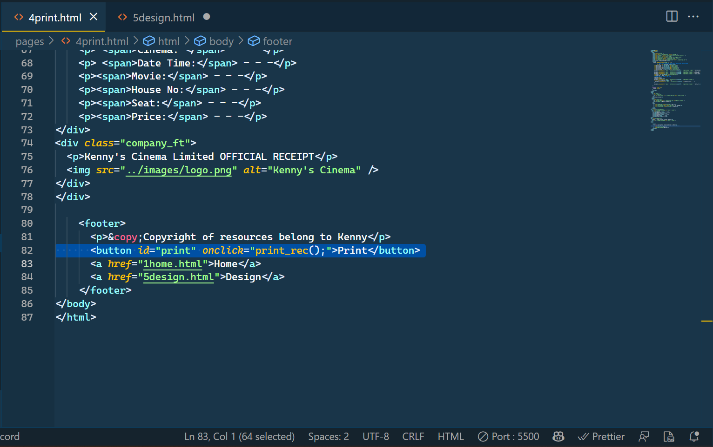
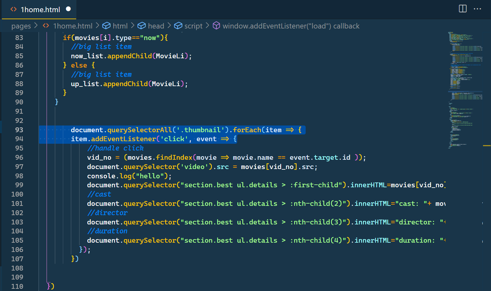
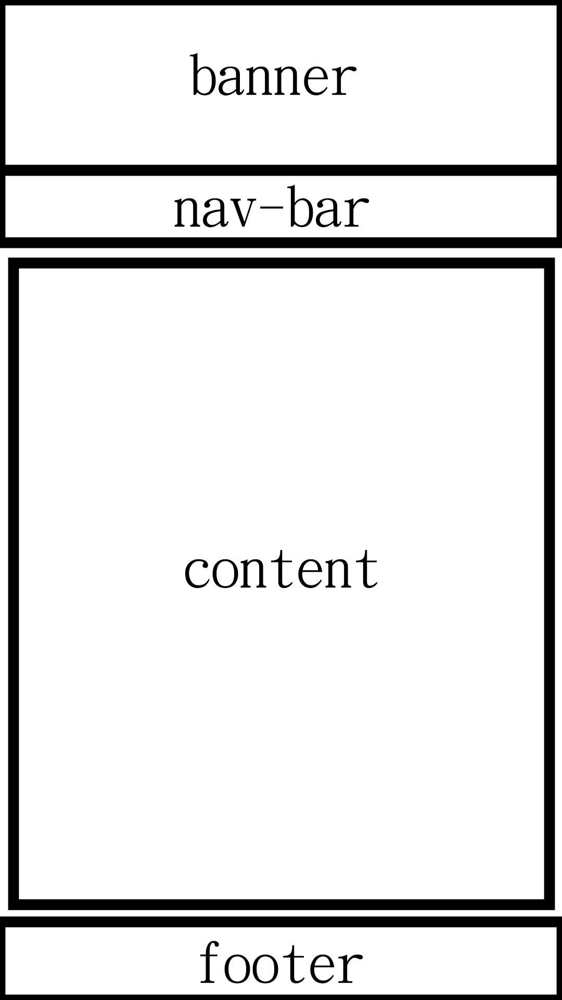

author: Wong Lik Hang Kenny
sid: 57166465
all requirements of the CW3 should be met
the first type of Event handler (set up in HTML) is used in line 82 of 4print.html
the second addEventListener (set up in JAVASCRIPT) is used in line 93 of 1home.html
1. reduce the logo size, make the navigation bar as 1-row size, and fixed at top
2. use a modern font-family
3. put all related items in one singe box/column (carousel slider for the up coming movies and now showing movies)
change the style of textboxes and buttons
resize the maps
make sure that the cursor won't change when hovering at description textboxes (containing movie names)
I may change the image to hero image with styling as well
resize the size of seat imgs
align the whole seating plan in center
make the imgs of seat click-able
remake the format to make it looks like a movie ticket
section is used in the home page so the general content can be styled by css as a group
"div"s are used as small groups so we can style the group individually by group later
3 forms are used in the tickets page and so I can use data attributes to relate corresponding data
The general layout for every page:
4 stylesheets are created for home page, now showing page, ticket page and print page respectively
for the banner we align the icon and the company name at the center vertically, we have applied animation to the icon that makes it moves from left to right and then back to middle on top of the company name with ease-in-out property to make the whole animation smoother
for the nav bar, we set the flex flow to column when the screen size is smaller than 600px so the items in nav bar can be shown in a better way.
for the footer, we centered all the items vertically as the cw required we seperate the "design pages and home pages" and the copyright information into two side so as to make it look better
for the home page, 3 sections are used and one of the sections - best section is used for best movie of the week specifically and it will occupy 2 column when the page width is smaller than 601px. The other 2 are for the Nowing showing and Upcoming movies, one container is used for each movie to align the movie details and thumbnails horizontally
now showing page and ticket page have the similar layout as the home page
the CSS3 features that I used in the CW are: Box Shadow, Text Shadows, border-radius, :is(), aspect-ratio,
for the box-showdow, we applied it to all the boxes in header and footer:
header, footer { box-shadow: 0 0 4px 2px #0003; }
for the text-shadow, we applied it on the items on navbar:
p.nav-item { padding: 0.5em; color: white; font-size: 1.5rem; text-shadow: 2px 2px 4px #0005; }
for the border-radius, we used it on the thumbnails of the movies in the home page
ul > li > img { border: white solid 3px; border-radius: 10px; }
we used this classing method on the a,nav in headers
header, header > :is(a, nav), footer { display: flex; align-items: center; gap: 0.5em; }
we used this property on the video in best section in the home page:
section.best video { width: min(510px, 80vw); aspect-ratio: 4 / 3; border-radius: 1rem; }